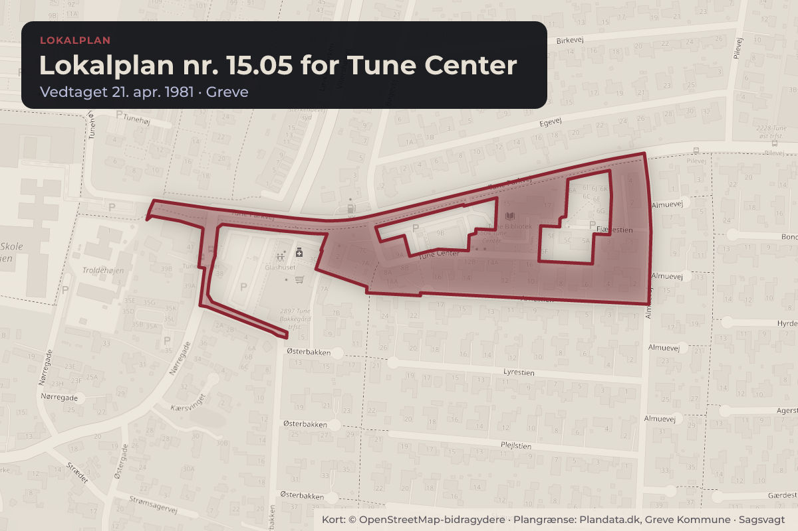
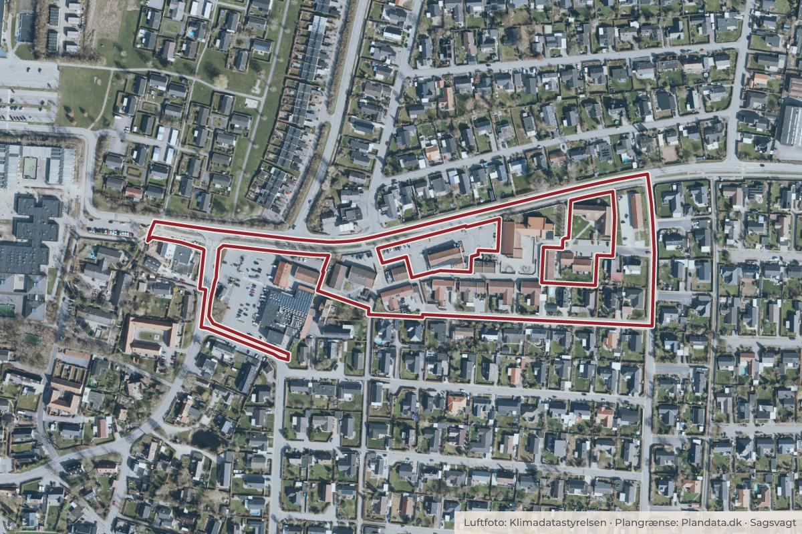

Besluttet 14. september, Plan- og Klimaudvalget, Greve
SuperBrugsen, Tune Center 4 - Dispensation fra lokalplan 15.19 vedr. tilbygning

Kort: © OpenStreetMap-bidragydere. Plangrænse: Plandata.dk, Greve Kommune.

Kort fortalt
- Hvem
- Plan- og Klimaudvalget, Greve Kommune
- Hvornår
- Mandag 14. september 2026
- Status
- Besluttet. Godkendt. Fremstilling Sagsprocedure Plan- og Klimaudvalget.
Er noget forkert her? Skriv til os
Læs hele sagen Kommunens egen tekst
Indstilling
Administrationen indstiller, at det godkendes der meddeles dispensation fra Lokalplan 15.19
Udvidelse af dagligvarebutik i Tune Center § 8.2 og § 8.3 til opførelse af en tilbygning som
ansøgt.
Sagsfremstilling
Superbrugsen i Tune håndterer, som øvrige dagligvareforretninger og andre forretninger,
stadigt flere pakker, bl.a. som følge af den voksende nethandel. For at håndtere pakkerne
forsvarligt og sikkert, både i forhold til kunderne og i forhold til butikkens drift, ønsker
Superbrugsen at opføre en tilbygning på den østlige facade af butikken som vist på Bilag 1.
Ejendommen er omfattet af Lokalplan 15.19 Udvidelse af dagligvarebutik i Tune Center og
kræver følgende dispensationer:
§ 8.2 Det samlede bruttoetageareal for en butik i lokalplanområdet må højst udgøre 2.000
kvm.
§ 8.3 Bebyggelse må kun opføres med en placering og i et omfang som vist på kortbilag
Med tilbygningen bliver butikkens bruttoetageareal 2.056 kvm, og tilbygningen opføres udenfor
byggefelterne.
Lokalplanen er vedtaget i januar 2010, og efterfølgende er planloven ændret, så
dagligvarebutikker nu kan være op til 5.000 kvm. Ændringerne er tilsvarende slået igennem i
kommuneplanens retningslinjer for detailhandel. Lokalplanens bestemmelser om
butiksstørrelser afspejler det dagældende lovgrundlag, hvorfor administrationen anbefaler at
give en dispensation svarende til det nugældende lovgrundlag.
Der lægges endvidere vægt på, at funktionen understøtter såvel Superbrugsen som
lokalområdet, samt at tilbygningen ikke vurderes at skæmme området eller medføre
nabogener.
Lovgrundlag
Jf. planloven § 19 kan kommunen meddele mindre væsentlige dispensationer fra lokalplaner.
Økonomiske konsekvenser
Sagen har ingen økonomiske konsekvenser for Greve Kommune.
Høring
Jf. planloven skal der gennemføres naboorientering før der meddeles dispensation fra en
lokalplan, medmindre naboorienteringen er af underordnet betydning for dem der skal
orienteres. I det konkrete tilfælde er Superbrugsen i Tune ejer af naboejendommen, og der er
derfor ikke foretaget naboorientering.
Beslutning
Godkendt.
Fremstilling
Sagsprocedure
Plan- og Klimaudvalget.
Kilde: Greve Kommune, Plan- og Klimaudvalget, referat fra mødet mandag 14. september 2026, punkt 23. Læs den originale sag hos kommunen.